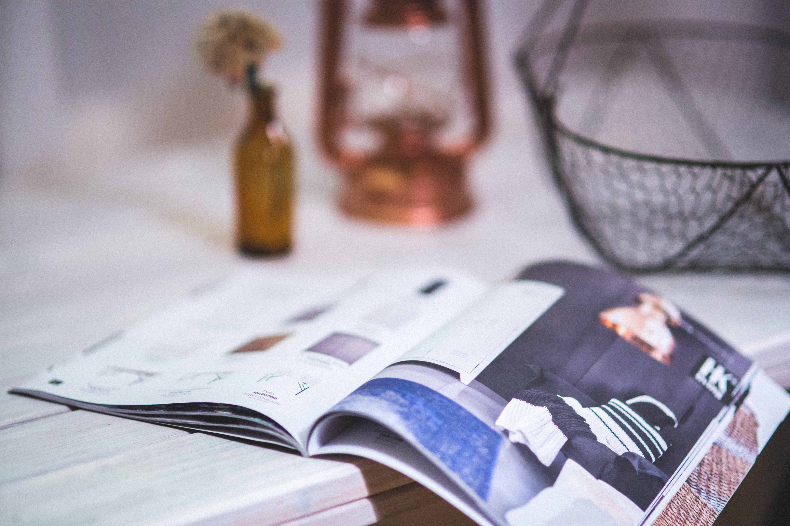

Customer service kami dapat dihubungi 7 hari dalam seminggu, hari kerja antara pkl. 08.00 - 21.00 & akhir pekan pkl. 10.00 - 21.00.
Customer Service Work-Craft : 0811 854 5555 - Call Center 0888 0808 5555 - Whatsapp E-mail: info@work.cr
© 2019 work-craft.com